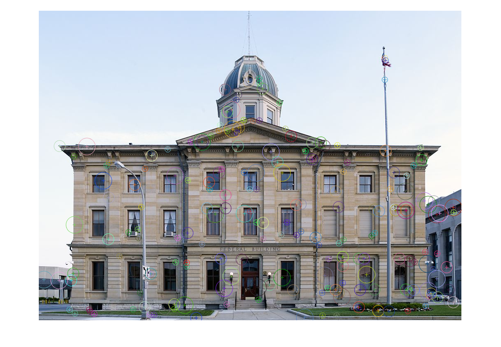
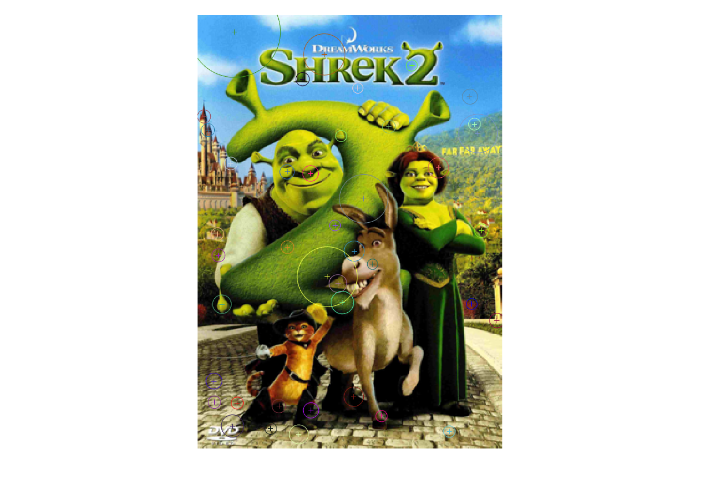
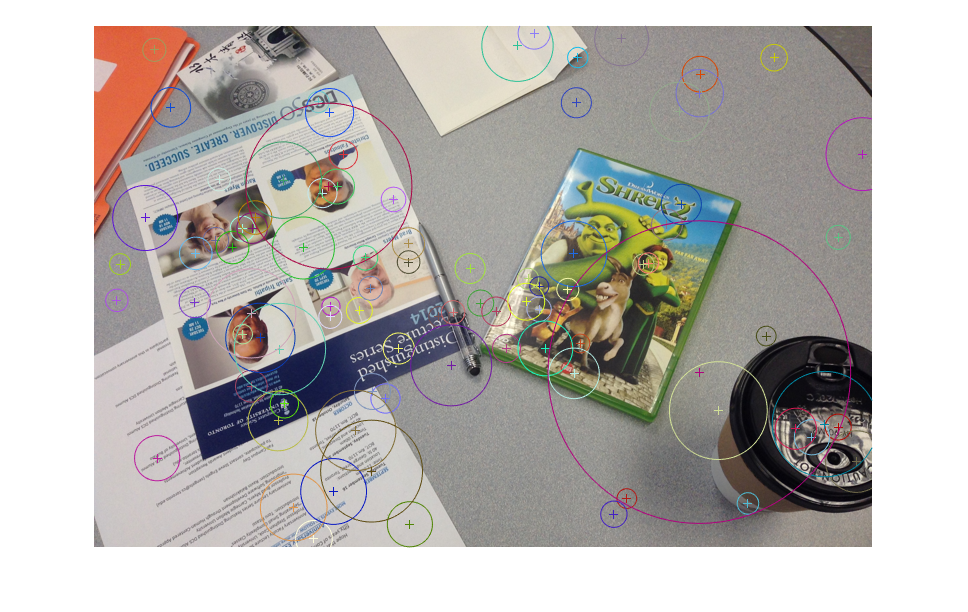
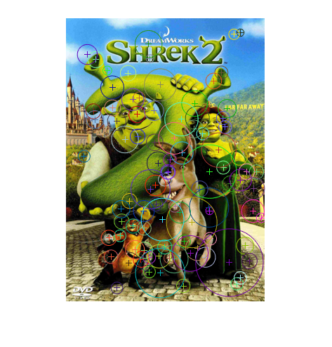
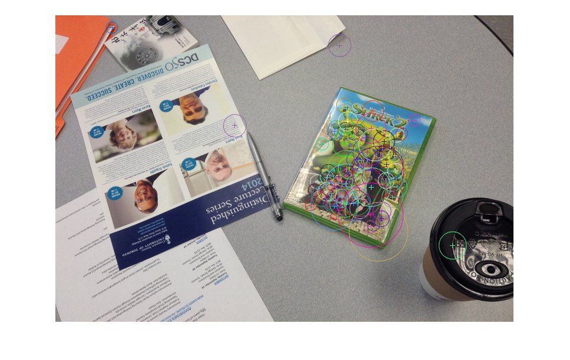
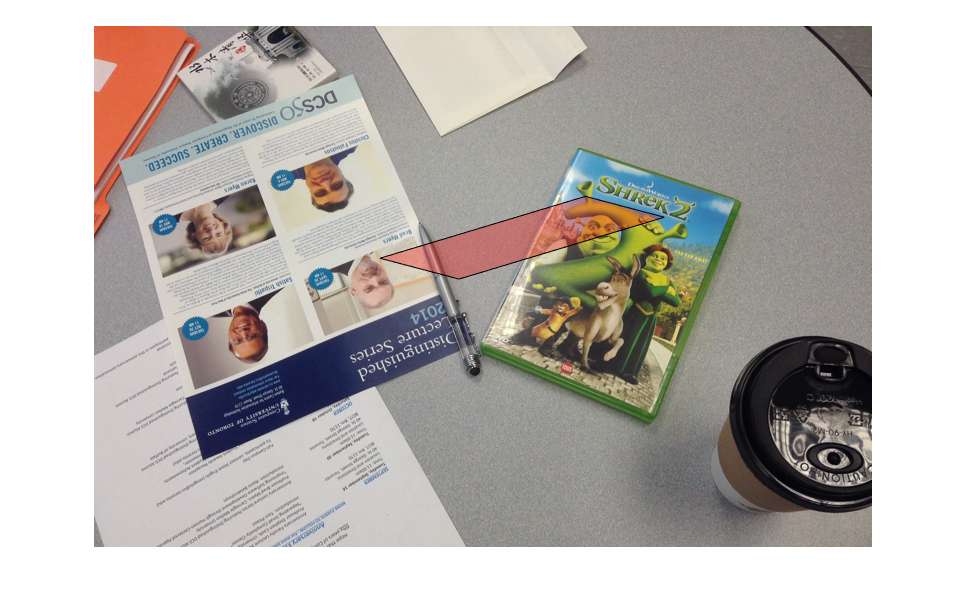
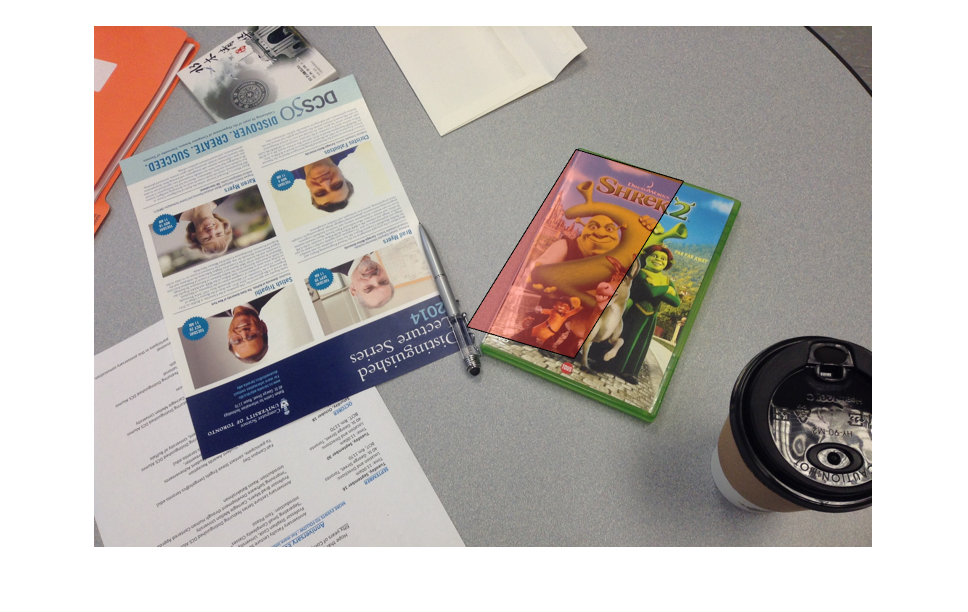

Contents
- Lowe’s scale-invariant interest point detection
- Feature extraction
- Appendix
- function H2to1 = computeH(p1,p2)
- function H = computeHessian(I)
- function PrincipalCurvature = computePrincipalCurvature(DoGPyramid)
- function [DoGPyramid, DoGLevels] = createDoGPyramid(GaussianPyramid, levels)
- function [GaussianPyramid] = createGaussianPyramid(im, sigma0, k, levels)
- function displayPyramid(pyrmid)
- function [locsDoG, GaussianPyramid] = DoGdetector(im, sigma0, k, levels, th_contrast, th_r)
- function locsDoG = getLocalExtrema(DoGPyramid, DoGLevels, PrincipalCurvature, th_contrast, th_r)
- function [matches] = matchInterestPoints(desc1, desc2, ratio)
- function h = plotInterestPoints(im, locs, po)
- function index = randIndex(maxIndex,len)
- function [f] = ransac( x,y,ransacCoef,funcFindF,funcDist )
- function bestH = ransacH(matches, locs1, locs2, nIter, tol)
Lowe’s scale-invariant interest point detection
im = imread('building_1.jpg');
im = im2double((im));
Parameters for Difference of Gaussians
scales = [-1, 0, 1, 2, 3, 4]; K = sqrt(2); sigma0 = 1; th_c = 0.03; th_r = 12;
Get the interest points and the Gaussian Pyramid used to compute it
[locs,GP] = DoGdetector(rgb2gray(im), sigma0, K, scales, th_c, th_r); plotInterestPoints(im,locs) drawnow()
ans =
Image with properties:
CData: [751x1024x3 double]
CDataMapping: 'direct'
Use GET to show all properties
 Please look at the appendix for the code of individual functions
Feature extraction
Computed SIFT using vlfeat library
% addpath('/path/to/vlfeat') im1 = imread('reference.png'); im2 = imread('test.png'); [locs1, desc1] = vl_sift(single(rgb2gray(im1))); [locs2, desc2] = vl_sift(single(rgb2gray(im2))); locs1 = locs1'; desc1 = desc1'; locs2 = locs2'; desc2 = desc2';
reference.png computed interest points
plotInterestPoints(im1, locs1); drawnow()
test.png computed interest points
figure plotInterestPoints(im2, locs2); drawnow()
Compute matches. See appendix for function code
matches = matchInterestPoints(desc1, desc2);
reference.png matched interest points
figure plotInterestPoints(im1, locs1(matches(:,1),:), 1); drawnow()
test.png matched interest points
figure plotInterestPoints(im2, locs2(matches(:,2),:), 1); drawnow()
note that colors of matched points in both images might be different and they do not indicate any correspondence
Get best 3 matches (also included best 8 matches)
[B,I] = sort(matches(:,3)); %% sort by distances
top3 = matches(I(1:3),:);
top8 = matches(I(1:8),:);
Compute Affine transformation using top3, top8 matches as well as RANSAC
H3 = computeH(locs1(top3(:,1),1:2)', locs2(top3(:,2),1:2)'); H8 = computeH(locs1(top8(:,1),1:2)', locs2(top8(:,2),1:2)'); H = ransacH(matches, locs1, locs2);
See appendix for function codes
Compute transformed corners
corners = [1,1,1;... 1,size(im1,1),1;... size(im1,2),size(im1,1),1;...1 size(im1,2),1,1;]; corners3 = (H3*corners')'; corners8 = (H8*corners')'; cornersR = (H*corners')';
Visualize transormation using top3 matches
figure x = corners3(:,1); y = corners3(:,2); imshow(im2), hold on, fill(x,y,'r','FaceAlpha',0.3), hold off drawnow()
Visualize transormation using top8 matches
figure x = corners8(:,1); y = corners8(:,2); imshow(im2), hold on, fill(x,y,'r','FaceAlpha',0.3), hold off drawnow()
Visualize transormation using RANSAC
figure x = cornersR(:,1); y = cornersR(:,2); imshow(im2), hold on, fill(x,y,'r','FaceAlpha',0.3), hold off drawnow()
Appendix
All function definitions are here
function H2to1 = computeH(p1,p2)
% function H2to1 = computeH(p1,p2) % INPUTS: % p1 and p2 - Each are size (2 x N) matrices of corresponding (x, y)' % coordinates between two images % % OUTPUTS: % H2to1 - a 3 x 3 matrix encoding the homography that best matches the linear % equation % p1 = p1'; % p2 = p2'; % A = []; % for i = 1:size(p1,1) % x1 = p1(i,1); % x2 = p2(i,1); % y1 = p1(i,2); % y2 = p2(i,2); % % A = vertcat(A,[-x1, -y1, -1, 0, 0, 0, x2*x1, x2*y1, x2]); % A = vertcat(A,[0, 0, 0, -x1, -y1, -1, y2*x1, y2*y1, y2]); % end % [V,~] = eig(A'*A); % h = V(:,1); % h = h/(h(end)); % H2to1 = reshape(h,[3,3])';
function H = computeHessian(I)
% function H = computeHessian(I) % [ix,iy] = gradient(I); % [H.ixx, H.ixy] = gradient(ix); % [H.iyx, H.iyy] = gradient(iy); % end
function PrincipalCurvature = computePrincipalCurvature(DoGPyramid)
% function PrincipalCurvature = computePrincipalCurvature(DoGPyramid) %%Edge Suppression % Takes in DoGPyramid generated in createDoGPyramid and returns % PrincipalCurvature,a matrix of the same size where each point contains the % curvature ratio R for the corre-sponding point in the DoG pyramid % % INPUTS % DoG Pyramid - size (size(im), numel(levels) - 1) matrix of the DoG pyramid % % OUTPUTS % PrincipalCurvature - size (size(im), numel(levels) - 1) matrix where each % point contains the curvature ratio R for the % corresponding point in the DoG pyramid % PrincipalCurvature = zeros(size(DoGPyramid)); % for i = 1:size(DoGPyramid,3) % I = DoGPyramid(:,:,i); % H = computeHessian(I); % R = (tracefun(H).^2) ./ (detfun(H)); % PrincipalCurvature(:,:,i) = R; % end % end % % function T = tracefun(H) % T = H.ixx + H.iyy; % end % % function D = detfun(H) % D = ((H.ixx) .* (H.iyy)) - ((H.ixy) .* (H.iyx)); % end
function [DoGPyramid, DoGLevels] = createDoGPyramid(GaussianPyramid, levels)
% function [DoGPyramid, DoGLevels] = createDoGPyramid(GaussianPyramid, levels) % Produces DoG Pyramid % inputs % Gaussian Pyramid - A matrix of grayscale images of size % (size(im), numel(levels)) % levels - the levels of the pyramid where the blur at each level is % outputs % DoG Pyramid - size (size(im), numel(levels) - 1) matrix of the DoG pyramid % created by differencing the Gaussian Pyramid input % L = numel(levels)-1; % DoGPyramid = GaussianPyramid(:,:,1:end-1); % for i = 1:L % DoGPyramid(:,:,i) = GaussianPyramid(:,:,i+1)-GaussianPyramid(:,:,i); % end % DoGLevels = levels(2:end); % % end
function [GaussianPyramid] = createGaussianPyramid(im, sigma0, k, levels)
% function [GaussianPyramid] = createGaussianPyramid(im, sigma0, k, levels) % Produces Gaussian Pyramid % inputs % im - a grayscale image with range 0 to 1 % sigma0 - the standard deviation of the blur at level 0 % k - the multiplicative factor of sigma at each level, where sigma=sigma_0 k^l % levels - the levels of the pyramid where the blur at each level is % sigma=sigma0 k^l % outputs % A matrix of grayscale images of size (size(im),numel(levels)) % im = im2double(im); % if size(im,3)==3 % im= rgb2gray(im); % end % % GaussianPyramid = zeros([size(im),length(levels)]); % for i = 1:length(levels) % sigma_ = sigma0*k^levels(i); % h = fspecial('gaussian',floor(3*sigma_*2)+1,sigma_); % GaussianPyramid(:,:,i) = imfilter(im,h); % end
function displayPyramid(pyrmid)
% function displayPyramid(pyrmid) % inputs: pyrmid - R x C x L; R x C is the size of the input image; L is the number of levels in the pyramid. % [nr, nc, nl]= size(pyrmid); % im2show= zeros(nr, nc*nl); % % for il=1:nl % im2show(1:end,1+(il-1)*nc : il*nc) = pyrmid(:,:,il); % end % % imshow(im2show,[]); % title('Pyramid of image') % end
function [locsDoG, GaussianPyramid] = DoGdetector(im, sigma0, k, levels, th_contrast, th_r)
% function [locsDoG, GaussianPyramid] = DoGdetector(im, sigma0, k, ... % levels, th_contrast, th_r) % DoGdetector % Putting it all together % % Inputs Description % -------------------------------------------------------------------------- % im Grayscale image with range [0,1]. % % sigma0 Scale of the 0th image pyramid. % % k Pyramid Factor. Suggest sqrt(2). % % levels Levels of pyramid to construct. Suggest -1:4. % % th_contrast DoG contrast threshold. Suggest 0.03. % % th_r Principal Ratio threshold. Suggest 12. % % Outputs Description % -------------------------------------------------------------------------- % % locsDoG N x 3 matrix where the DoG pyramid achieves a local extrema % in both scale and space, and satisfies the two thresholds. % % GaussianPyramid A matrix of grayscale images of size (size(im),numel(levels)) % GaussianPyramid = (createGaussianPyramid(im,... % sigma0,k, levels)); % % [mypyrdog,L] = createDoGPyramid(GaussianPyramid, levels); % % pc = computePrincipalCurvature(mypyrdog); % % locsDoG = getLocalExtrema(mypyrdog, L, pc, th_contrast, th_r); % % end
function locsDoG = getLocalExtrema(DoGPyramid, DoGLevels, PrincipalCurvature, th_contrast, th_r)
% Detecting Extrema % INPUTS % DoG Pyramid - size (size(im), numel(levels) - 1) matrix of the DoG pyramid % DoG Levels - The levels of the pyramid where the blur at each level is % outputs % PrincipalCurvature - size (size(im), numel(levels) - 1) matrix contains the % curvature ratio R % th_contrast - remove any point that is a local extremum but does not have a % DoG response magnitude above this threshold % th_r - remove any edge-like points that have too large a principal % curvature ratio % % OUTPUTS % locsDoG - N x 3 matrix where the DoG pyramid achieves a local extrema in both % scale and space, and also satisfies the two thresholds. % N = circshift(DoGPyramid,[-1, 0, 0]); % NE = circshift(DoGPyramid,[-1, 1, 0]); % E = circshift(DoGPyramid,[0, 1, 0]); % SE = circshift(DoGPyramid,[1, 1, 0]); % S = circshift(DoGPyramid,[1, 0, 0]); % SW = circshift(DoGPyramid,[1, -1, 0]); % W = circshift(DoGPyramid,[0, -1, 0]); % NW = circshift(DoGPyramid,[-1, -1, 0]); % Coarse = circshift(DoGPyramid,[0,0,1]); % Fine = circshift(DoGPyramid,[0,0,-1]); % % locs = (DoGPyramid>=N)&(DoGPyramid>=NE)&(DoGPyramid>=E)&... % (DoGPyramid>=SE)&(DoGPyramid>=S)&(DoGPyramid>=SW)&... % (DoGPyramid>=W)&(DoGPyramid>=NW)&... % (DoGPyramid>=Coarse)&(DoGPyramid>=Fine); % locs(:,:,1) = 0; % locs(:,:,end) = 0; % Xl = []; % Yl = []; % Dl = []; % for i = 1:size(DoGPyramid,3)-2 % iloc = locs(:,:,i+1); % D = DoGPyramid(:,:,i+1); % R = PrincipalCurvature(:,:,i+1); % iloc = iloc & (D>th_contrast); % iloc = iloc & (R<th_r); % [Yt,Xt] = find(iloc); % Xl = vertcat(Xl,Xt); % Yl = vertcat(Yl,Yt); % Dl = vertcat(Dl,DoGLevels(i+1)*ones(size(Xt))); % end % locsDoG = horzcat(Xl,Yl,Dl);
function [matches] = matchInterestPoints(desc1, desc2, ratio)
% function [matches] = briefMatch(desc1, desc2, ratio) % Performs the descriptor matching % inputs : desc1 , desc2 - m1 x n and m2 x n matrix. m1 and m2 are the number of keypoints in image 1 and 2. % n is the number of bits in the brief % outputs : matches - p x 2 matrix. where the first column are indices % into desc1 and the second column are indices into desc2 % % if nargin<3 % ratio = .8; % end % D = dist2(desc1, desc2); % ix = []; % iy = []; % d = []; % for i = 1:size(D,1) % [B,I] = sort(D(i,:)); % if (B(1)/B(2) > ratio), continue, end % ix(end+1) = i; % iy(end+1) = I(1); % d(end+1) = B(1); % end % matches = [ix', iy', d']; % end
function h = plotInterestPoints(im, locs, po)
% im = image for interest points % locs = locations of interest points, each row containing [x,y,scale] % po = fraction of interests point to be drawn % h = output handle for the plot % h = imshow(im); hold on % if ~exist('po','var') % po = 0.1; % end % s = max(size(im,1),size(im,2))/150; % for i = 1:size(locs,1); % if rand>po, continue, end % c = [rand rand rand]; % try % rectangle('Position',... % [locs(i,1)-s*locs(i,3), locs(i,2)-s*locs(i,3), 2*s*locs(i,3), 2*s*locs(i,3)],... % 'Curvature', [1 1],... % 'EdgeColor', c); % scatter(locs(i,1),locs(i,2),[],c,'+') % catch % continue % end % pause(0.000000001) % end % hold off % end
function index = randIndex(maxIndex,len)
% INDEX = RANDINDEX(MAXINDEX,LEN) % randomly, non-repeatedly select LEN integers from 1:MAXINDEX % % if len > maxIndex % index = []; % return % end % % index = zeros(1,len); % available = 1:maxIndex; % rs = ceil(rand(1,len).*(maxIndex:-1:maxIndex-len+1)); % for p = 1:len % while rs(p) == 0 % rs(p) = ceil(rand(1)*(maxIndex-p+1)); % end % index(p) = available(rs(p)); % available(rs(p)) = []; % end %
function [f] = ransac( x,y,ransacCoef,funcFindF,funcDist )
% % thInlrRatio = ransacCoef.thInlrRatio; % thDist = ransacCoef.thDist; % thInlr = round(thInlrRatio*size(x,2)); % inlrNum = zeros(1,ransacCoef.iterNum); % fLib = cell(1,ransacCoef.iterNum); % for p = 1:ransacCoef.iterNum % sampleIdx = randIndex(size(x,2),max(thInlr,ransacCoef.minPtNum)); % f1 = funcFindF(x(:,sampleIdx),y(:,sampleIdx)); % dist = funcDist(f1,x,y); % inlier1 = find(dist < thDist); % inlrNum(p) = length(inlier1); % if length(inlier1) < thInlr, continue; end % fLib{p} = funcFindF(x(:,inlier1),y(:,inlier1)); % end % [~,idx] = max(inlrNum); % f = fLib{idx}; % end
function bestH = ransacH(matches, locs1, locs2, nIter, tol)
% INPUTS % locs1 and locs2 - matrices specifying point locations in each of the images % matches - matrix specifying matches between these two sets of point locations % nIter - number of iterations to run RANSAC % tol - tolerance value for considering a point to be an inlier % % OUTPUTS % bestH - homography model with the most inliers found during RANSAC % if ~exist('nIter','var') % nIter = 1000; % end % if ~exist('tol','var') % tol = 2; % end % % p1 = locs1(matches(:,1),1:2); % p2 = locs2(matches(:,2),1:2); % % coef.minPtNum = 16; % coef.iterNum = nIter; % coef.thDist = tol; % coef.thInlrRatio = .1; % bestH = ransac(p1',p2',coef,@computeH,@ptsDist); % end % % function d = ptsDist(H,p1,p2) % n = size(p1,2); % p3 = H*[p1;ones(1,n)]; % p3 = p3(1:2,:)./repmat(p3(3,:),2,1); % d = sqrt(sum((p2-p3).^2,1)); % end